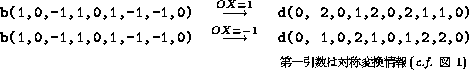

Next: B.3 decide モジュール
Up: B 主なモジュールと述語の説明
Previous: B.1 main モジュール
- encode +Board, -NBoard, -StateNum, +OX
-
局面 Board から、それに対応する状態番号 StateNum を
生成する。この StateNum は Q値を参照する際のインデックスとなる。
また、数値で表された局面 Board を、正数で表された局面に
変換したものを NBoard と同一化する。
数値で表された局面
b/9 が両プレイヤに共通な形であるのに対し、
正数で表された局面 d/10 は対称変換情報を含む上、
OX がわから見た主観的状態を表している点で異なっている。
d/10 では持ち手 OX の駒が置かれているマス目は 2 で、
相手の駒が置かれているマス目は 1 で表す。

- minstate +States, -StateVec
-
生成された状態番号候補(対象形含め8通り)のリスト States から、
最小の状態番号を選択し、それを状態番号として採用する．
- decode +State, +Sym, -Board, +OX
-
状態番号 State と対称変換情報 Sym により、もとの局面
Board を再現する。
- d2b +NBoard, -Board, +OX
-
対称変換の施され正数化された局面表現 NBoard から、もとの局面情報
Board に変換する。
- sym +Board, +Sym, -NewBoard
-
局面 Board を、対称変換情報 Sym に基づき対称変換したものを、
NewBoard に同一化する。
- revsym +Sym, -Rev
-
対称変換情報 Sym の逆変換の対称変換情報で Rev を同一化する。
![[i18n checked]](i18n-ok.gif) Q-learning により学習を行う Tic-Tac-Toe プログラム
Q-learning により学習を行う Tic-Tac-Toe プログラム